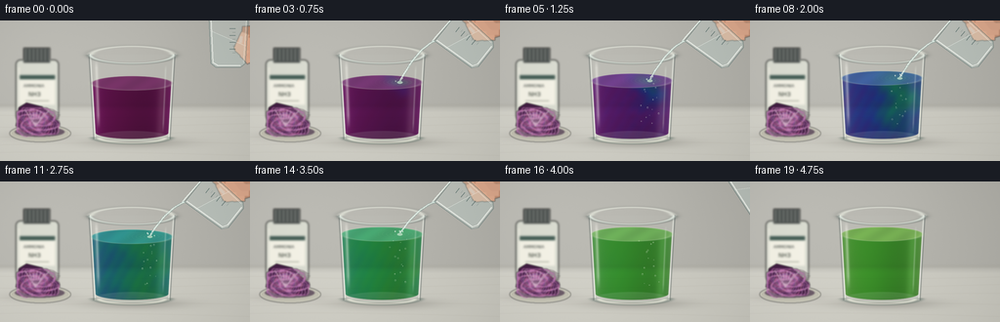
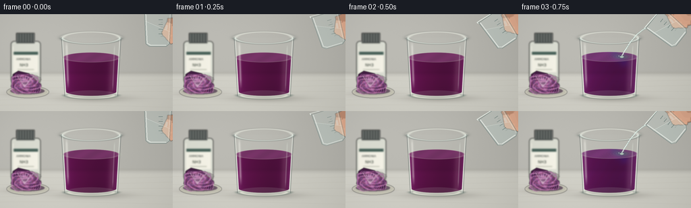

CODING AGENTS AS PIXEL WORLD MODELS
traex/GPT-6.1-Sol · material_0032
点击播放 · 原生 RGB 像素
逐轮保存的候选
回放视频、检查图与代码变化。
每份候选均可单独播放。实际图片检查记录在下方工具轨迹中。
候选 01播放与检查图
点击播放 · 原生 RGB 像素


展开代码变化
--- 上一保存版本
+++ 本次保存版本
@@ -0,0 +1,278 @@
+"""Procedural, supersampled RGB chemistry timelapse; no external assets."""
+from pathlib import Path
+import math
+import numpy as np
+from PIL import Image, ImageDraw, ImageFilter, ImageFont
+import artifact_io
+
+ROOT = Path(__file__).resolve().parent
+S = 3
+W,H = 256*S,144*S
+Y,X=np.mgrid[0:H,0:W].astype(float)/S
+rng=np.random.default_rng(103)
+GRAIN=rng.normal(0,0.5,(H,W))
+
+def blend(im,col,a):
+ a=np.clip(a,0,1)
+ if np.ndim(a)==2:a=a[...,None]
+ return im*(1-a)+np.asarray(col)*a
+
+def pil(im):return Image.fromarray(np.uint8(np.clip(im,0,255)))
+def ellipse_alpha(cx,cy,rx,ry,soft=.6):
+ d=np.sqrt(((X-cx)/rx)**2+((Y-cy)/ry)**2)
+ return np.clip((1-d)*min(rx,ry)/soft+.5,0,1)
+
+def layer_draw(fn,blur=0):
+ im=Image.new('RGBA',(W,H));d=ImageDraw.Draw(im)
+ fn(d)
+ if blur:im=im.filter(ImageFilter.GaussianBlur(blur*S))
+ a=np.asarray(im).astype(float)
+ return a[:,:,:3],a[:,:,3]/255
+
+def line(d,pts,fill,width=1):
+ d.line([(round(x*S),round(y*S)) for x,y in pts],fill=fill,width=max(1,round(width*S)),joint='curve')
+def ell(d,box,fill=None,outline=None,width=1):
+ d.ellipse(tuple(round(v*S) for v in box),fill=fill,outline=outline,width=max(1,round(width*S)))
+def poly(d,pts,fill):d.polygon([(round(x*S),round(y*S)) for x,y in pts],fill=fill)
+
+def font(sz):
+ p='/usr/share/fonts/truetype/dejavu/DejaVuSans.ttf'
+ return ImageFont.truetype(p,round(sz*S))
+
+# A neutral, softly defocused countertop photographed under a large left window.
+def background():
+ a=np.zeros((H,W,3),float)
+ wall=np.clip((Y-85)/9,0,1)
+ light=7*np.exp(-((X-68)/125)**2-((Y-36)/77)**2)
+ for i,c in enumerate([186,185,178]):a[:,:,i]=c+light-12*(X/256)+wall*(24 if i<2 else 22)
+ grain=GRAIN*.5+np.sin(X*.049+Y*.028)*.32
+ a+=grain[...,None]
+ a=blend(a,[129,126,113],.12*np.exp(-((Y-87)/1.8)**2))
+ # faint long countertop grain
+ for k in range(5):
+ yy=97+10*k+2.5*np.sin(X/90+k)
+ a=blend(a,[148,138,122],.065*np.exp(-((Y-yy)/.45)**2))
+ # glass and bowl shadows
+ a=blend(a,[69,64,58],.28*np.exp(-((X-139)/48)**2-((Y-125)/5)**2))
+ a=blend(a,[87,75,75],.18*np.exp(-((X-39)/31)**2-((Y-118)/5)**2))
+ # Little laboratory reagent bottle in soft focus, behind the cabbage.
+ def bottle(d):
+ d.rounded_rectangle((16*S,40*S,60*S,102*S),radius=5*S,fill=(220,222,211,255),outline=(133,140,132,170),width=S)
+ d.rectangle((24*S,28*S,51*S,43*S),fill=(76,81,79,255))
+ for x in range(26,51,4):line(d,[(x,29),(x,41)],(126,132,128,160),.5)
+ d.rounded_rectangle((20*S,56*S,56*S,86*S),radius=1*S,fill=(246,244,232,255))
+ d.rectangle((20*S,56*S,56*S,60*S),fill=(68,93,85,255))
+ d.text((24*S,64*S),'AMMONIA',font=font(4.3),fill=(40,48,43,255))
+ d.text((29*S,72*S),'NH3',font=font(6),fill=(55,64,54,255))
+ line(d,[(26,82),(50,82)],(142,147,131,240),.5)
+ line(d,[(19,48),(19,91)],(255,255,241,170),1.5)
+ c,m=layer_draw(bottle,1.05);a=blend(a,c,m)
+ # Small, freshly cut red cabbage section, with thin nested leaf veins.
+ def cabbage(d):
+ ell(d,(10,107,72,124),fill=(195,193,178,255),outline=(234,233,217,255),width=1)
+ ell(d,(15,109,66,119),fill=(108,92,104,255))
+ poly(d,[(16,108),(19,89),(27,84),(43,88),(61,105),(57,117),(28,116)],(66,30,66,255))
+ for j in range(19):
+ rr=4+j*1.28
+ pts=[]
+ for ang in np.linspace(0,2*math.pi,130):
+ r=rr*(1+.09*math.sin(ang*5+j*.9)+.05*math.sin(ang*11+j))
+ px=37+r*math.cos(ang)
+ py=103+r*.57*math.sin(ang)
+ if py>89 and px>17 and px<61:pts.append((px,py))
+ if len(pts)>1:line(d,pts,(169+j%4*13,100+j%3*12,161+j%5*6,230),.7)
+ for j in range(7):
+ line(d,[(36,108),(26+j*4,92+j%3)],(207,157,196,180),.55)
+ c,m=layer_draw(cabbage,.65);a=blend(a,c,m)
+ return a
+BG=background()
+
+# Thin edge masks give the glass thickness, rather than opaque cartoon outlines.
+def glass(im,i):
+ # Transparent air-filled wall, tapered very slightly toward its thick base.
+ rad=44-(np.clip(Y,35,119)-35)*.058
+ xn=(X-135)/rad
+ body=(np.abs(xn)<1)&(Y>=35)&(Y<120)
+ trans=.032+.085*np.abs(xn)**9
+ im=blend(im,[227,236,228],trans*body)
+ # Back wall and lip show through the air above the liquid.
+ d=np.sqrt(((X-135)/44)**2+((Y-35)/9.1)**2)
+ ring=np.exp(-((d-1)*8.5)**2)
+ im=blend(im,[97,104,99],ring*.23)
+ im=blend(im,[252,254,242],np.exp(-((d-.95)*13)**2)*.58*(Y<35))
+ return im
+
+PALETTE=np.array([[101,27,83],[96,40,124],[45,75,142],[22,126,133],[45,146,105],[111,157,65]],float)
+ABSORB=np.array([[.80,2.96,1.0],[.93,2.1,.62],[1.90,1.27,.42],[2.1,.67,.72],[1.78,.43,1.11],[1.05,.33,1.8]])
+
+def liquid(im,frame):
+ f=float(frame)
+ progress=np.clip((f-2.0)/14.5,0,1)
+ surf=64-10.2*np.clip((f-2)/12,0,1)
+ rad=44-(np.clip(Y,35,119)-35)*.058-1.8
+ xn=(X-135)/rad
+ depth=np.sqrt(np.clip(1-xn*xn,0,1))
+ upper=surf-7.2*depth
+ lower=115+6.4*depth
+ mask=np.clip((1-np.abs(xn))*rad*2,0,1)*np.clip((Y-upper)*2,0,1)*np.clip((lower-Y)*2,0,1)
+ # Advect three dimensional pH fronts: corkscrewing alkaline plumes descend
+ # from the point of impact, while the surrounding purple gradually mixes.
+ yn=(Y-surf)/(116-surf)
+ wfield=0
+ absorbs=np.zeros((H,W,3)); pigment=np.zeros_like(absorbs)
+ for z,weight in [(-.66,.25),(0,.5),(.66,.25)]:
+ n=(np.sin(yn*10.0+xn*4.6-z*3-f*.22)+.55*np.sin(yn*23-xn*8+z*5+f*.28)+.32*np.sin(xn*21+yn*18-f*.25))/1.87
+ plume_x=.38+.22*np.sin(yn*9-f*.21+z*1.4)
+ plume=np.exp(-((xn-plume_x)/(.16+progress*.65))**2)
+ reach=np.clip((progress*2.25-yn+.2)/.6,0,1)
+ # early local blue-green tongues become an even green solution
+ base=progress*.95
+ concentration=base+(1-progress)*(.46*plume*reach+progress*.34*n-.12*progress*(1-xn))
+ concentration=np.clip(concentration,0,1)
+ if frame<=2:concentration*=0
+ v=concentration*5
+ k=np.minimum(v.astype(int),4);q=(v-k)[...,None]
+ absorbs+=(ABSORB[k]*(1-q)+ABSORB[k+1]*q)*weight
+ pigment+=(PALETTE[k]*(1-q)+PALETTE[k+1]*q)*weight
+ path=.34+depth*1.15
+ optical=np.exp(-absorbs*path[...,None])
+ transmission=BG*optical
+ # Broad light source scattering and caustics through the curved liquid.
+ lum=.84+.17*np.exp(-((xn+.34)/.68)**2)+.08*np.cos(yn*2.0)
+ color=transmission*.78+pigment*.26
+ color*=lum[...,None]
+ caustic=np.exp(-((xn-.77)/.115)**2)*.20
+ color+=caustic[...,None]*np.array([80,102,70])
+ color+=GRAIN[...,None]*.3
+ im=blend(im,color,mask*.96)
+ # Horizontal surface: a translucent elliptical meniscus with reflected light.
+ surface=ellipse_alpha(135,surf,41.6,7.3,.5)
+ pv=progress*5;k=min(int(pv),4);q=pv-k
+ sc=PALETTE[k]*(1-q)+PALETTE[k+1]*q
+ n=.5+.5*np.sin(X*.20+Y*.33+f*.23)
+ scol=sc[None,None,:]*(.88+.1*n[...,None])+np.array([35,40,37])
+ scol=np.broadcast_to(scol,(H,W,3)).copy()
+ # blue-green impact spot only during the pour
+ flow=1 if 3<=frame<=14 else 0
+ spot=np.exp(-((X-154)/11)**2-((Y-surf)/3.8)**2)*flow*(1-progress)*.6
+ scol=scol*(1-spot[...,None])+np.array([74,151,117])*spot[...,None]
+ im=blend(im,scol,surface*.72)
+ rim=np.sqrt(((X-135)/41.6)**2+((Y-surf)/7.3)**2)
+ im=blend(im,[209,223,194],np.exp(-((rim-1)*15)**2)*.20)
+ # fine ripples from the falling stream (elliptically foreshortened)
+ if 3<=frame<=15:
+ rd=np.sqrt(((X-153)/1.0)**2+((Y-surf)/.26)**2)
+ ripple=(.5+.5*np.cos(rd*1.5-f*1.9))**16*np.exp(-rd/11)*surface*.19
+ im=blend(im,[221,230,210],ripple)
+ # Tiny entrained bubbles rise, never obscuring the color reaction.
+ if 4<=frame<=16:
+ def bubbles(d):
+ for j in range(14):
+ bx=153+math.sin(j*3.5+frame*.2)*(3+j*.6)
+ by=surf+3+((j*8.1-frame*3.2)%(108-surf-4))
+ rr=.35+(j%3)*.20
+ ell(d,(bx-rr,by-rr,bx+rr,by+rr*1.2),outline=(231,241,218,90),width=.32)
+ ell(d,(bx-rr*.3,by-rr*.3,bx+rr*.2,by),fill=(231,250,224,110))
+ c,a=layer_draw(bubbles);im=blend(im,c,a)
+ return im,surf
+
+def glass_front(im):
+ rad=44-(np.clip(Y,35,119)-35)*.058
+ # Each curved edge carries a dark refracted line beside a narrow bright one.
+ for side in [-1,1]:
+ edge=135+side*rad
+ vertical=np.clip((Y-34)*2,0,1)*np.clip((122-Y)*1.5,0,1)
+ im=blend(im,[67,79,78],np.exp(-((X-edge)/.60)**2)*vertical*.42)
+ im=blend(im,[249,253,243],np.exp(-((X-(edge-side*1.35))/.58)**2)*vertical*.62)
+ # Long broken reflections of the softbox, most visible along the left face.
+ streak=np.exp(-((X-(98.5+.037*(Y-45)))/1.6)**2)
+ v=np.clip((Y-40)/8,0,1)*np.clip((111-Y)/14,0,1)
+ im=blend(im,[254,253,244],streak*v*.39)
+ streak2=np.exp(-((X-(169.9-.043*(Y-40)))/.85)**2)
+ im=blend(im,[237,248,235],streak2*np.clip((Y-45)/6,0,1)*np.clip((115-Y)/10,0,1)*.25)
+ # Heavy transparent base with a subtle double ellipse and prismatic highlights.
+ base=ellipse_alpha(135,120,39.2,7.0)
+ im=blend(im,[199,214,199],base*.13)
+ d=np.sqrt(((X-135)/39.5)**2+((Y-120)/6.2)**2)
+ im=blend(im,[88,105,97],np.exp(-((d-1)*10)**2)*.40*(Y>119))
+ im=blend(im,[248,249,232],np.exp(-((d-.86)*13)**2)*.57*(Y>120))
+ im=blend(im,[242,250,235],np.exp(-((Y-123)/.65)**2)*np.exp(-((X-135)/25)**6)*.46)
+ # Crisp rolled mouth in front of the back rim.
+ d=np.sqrt(((X-135)/44)**2+((Y-35)/9.1)**2)
+ im=blend(im,[76,89,85],np.exp(-((d-1)*15)**2)*(Y>=35)*.38)
+ im=blend(im,[243,251,241],np.exp(-((d-.968)*20)**2)*(Y>=35)*.74)
+ return im
+
+def source(im,frame,surf):
+ # Off-screen hand gently tips a small glass laboratory beaker, then withdraws.
+ entering=np.clip(frame/3,0,1)
+ leaving=np.clip((frame-14)/3,0,1)
+ tilt=-.90*entering+.55*leaving
+ anchor=np.array([189+25*(1-entering)+65*leaving,21-24*(1-entering)-35*leaving])
+ rot=np.array([[math.cos(tilt),-math.sin(tilt)],[math.sin(tilt),math.cos(tilt)]])
+ def tr(p):return tuple((np.array(p)-[-20,-25])@rot.T+anchor)
+ # fingers in the background: smoothly shaded rather than a hard silhouette
+ def hand(d):
+ poly(d,[tr((14,-16)),tr((40,-18)),tr((54,-7)),tr((53,25)),tr((28,26)),tr((12,15))],(186,137,111,255))
+ for j in range(3):
+ pts=[tr((19+j*7,-5)),tr((15+j*7,12)),tr((22+j*7,20))]
+ line(d,pts,(222-j*5,170-j*4,141-j*3,255),8)
+ line(d,[tr((20+j*7,12)),tr((23+j*7,16))],(153,108,86,150),.6)
+ line(d,[tr((17,-9)),tr((10,6)),tr((18,13))],(224,174,145,255),9)
+ line(d,[tr((13,-6)),tr((12,1))],(240,204,181,190),3)
+ c,a=layer_draw(hand,.5);im=blend(im,c,a)
+ # Transparent glass cup, colorless reagent and graduations.
+ def beaker(d):
+ pts=[tr((-20,-25)),tr((20,-25)),tr((17,22)),tr((12,26)),tr((-13,26)),tr((-18,22))]
+ poly(d,pts,(208,229,224,58))
+ # pool held against lower side of the tilted vessel
+ poly(d,[tr((-19,-12)),tr((18,4)),tr((17,22)),tr((12,25)),tr((-13,25)),tr((-18,22))],(198,227,222,70))
+ line(d,[tr((-19,-12)),tr((18,4))],(241,252,245,155),.8)
+ line(d,pts[0:]+[pts[0]],(90,116,113,145),.7)
+ line(d,[tr((-18,-24)),tr((-16,21)),tr((-11,24)),tr((12,24))],(249,255,249,190),1.15)
+ line(d,[tr((18,-23)),tr((15,21))],(240,249,240,150),.65)
+ # Open rim and tiny pouring lip
+ line(d,[tr((-21,-25)),tr((-22,-27)),tr((-16,-27)),tr((20,-25))],(243,254,246,200),1.0)
+ for j in range(4):
+ line(d,[tr((1,-14+j*7)),tr((7,-14+j*7))],(75,102,99,165),.6)
+ line(d,[tr((4,-10+j*7)),tr((7,-10+j*7))],(91,114,108,135),.4)
+ c,a=layer_draw(beaker);im=blend(im,c,a)
+ # Transparent, continuous falling ribbon, highlight moving with the water.
+ if 3<=frame<=14:
+ px,py=anchor
+ points=[]
+ for s in np.linspace(0,1,90):
+ xx=px+(153-px)*s+.18*math.sin(s*22+frame)
+ yy=py+(surf-py)*(.38*s+.62*s*s)
+ points.append((xx,yy))
+ def pour(d):
+ line(d,points,(112,148,145,110),2.2)
+ line(d,[(x-.35,y) for x,y in points],(239,251,244,215),.85)
+ line(d,[(x+.50,y) for x,y in points],(224,244,231,130),.50)
+ ell(d,(150.5,surf-1.0,156,surf+1.4),fill=(202,231,206,180))
+ for j in range(3):
+ aa=j*2.1+frame*.9
+ xx=153+math.sin(aa)*(3+j)
+ yy=surf-1-abs(math.cos(aa))*(2+j)
+ ell(d,(xx-.45,yy-.7,xx+.45,yy+.7),fill=(237,247,231,175))
+ c,a=layer_draw(pour);im=blend(im,c,a)
+ elif frame==15:
+ def drops(d):
+ for xx,yy,rr in [(170,36,.65),(161,44,.75),(155,49,.6)]:ell(d,(xx-rr,yy-rr*1.5,xx+rr,yy+rr*1.5),fill=(220,241,230,170))
+ c,a=layer_draw(drops);im=blend(im,c,a)
+ return im
+
+def render(frame):
+ im=glass(BG.copy(),frame)
+ im,surf=liquid(im,frame)
+ im=glass_front(im)
+ im=source(im,frame,surf)
+ # Gentle lens vignette, consistent exposure and fine sensor grain.
+ vign=1-.065*((X-130)/180)**2-.040*((Y-70)/125)**2
+ im=im*vign[...,None]+GRAIN[...,None]*.3
+ return np.asarray(pil(im).resize((256,144),Image.Resampling.LANCZOS))
+
+if __name__=='__main__':
+ frames=np.stack([render(i) for i in range(20)])
+ artifact_io.save(frames,ROOT)
+ print('Saved',frames.shape,frames.dtype,'to',ROOT)
可观测工具轨迹
实际执行的命令与返回图片。
命令 1exit 0
/bin/bash -lc 'ls -la && cat prompt.txt && cat GENERATION_RULES.md && cat task_spec.json'
命令 2exit 0
/bin/bash -lc "cat artifact_io.py && python - <<'PY'
import numpy, PIL
print('numpy/PIL available')
PY"命令 3exit 0
/bin/bash -lc "cat > generate.py <<'PY'
\"\"\"Procedural, supersampled RGB chemistry timelapse; no external assets.\"\"\"
from pathlib import Path
import math
import numpy as np
from PIL import Image, ImageDraw, ImageFilter, ImageFont
import artifact_io
ROOT = Path(__file__).resolve().parent
S = 3
W,H = 256*S,144*S
Y,X=np.mgrid[0:H,0:W].astype(float)/S
rng=np.random.default_rng(103)
GRAIN=rng.normal(0,0.5,(H,W))
def blend(im,col,a):
a=np.clip(a,0,1)
if np.ndim(a)==2:a=a[...,None]
return im*(1-a)+np.asarray(col)*a
def pil(im):return Image.fromarray(np.uint8(np.clip(im,0,255)))
def ellipse_alpha(cx,cy,rx,ry,soft=.6):
d=np.sqrt(((X-cx)/rx)**2+((Y-cy)/ry)**2)
return np.clip((1-d)*min(rx,ry)/soft+.5,0,1)
def layer_draw(fn,blur=0):
im=Image.new('RGBA',(W,H));d=ImageDraw.Draw(im)
fn(d)
if blur:im=im.filter(ImageFilter.GaussianBlur(blur*S))
a=np.asarray(im).astype(float)
return a[:,:,:3],a[:,:,3]/255
def line(d,pts,fill,width=1):
d.line([(round(x*S),round(y*S)) for x,y in pts],fill=fill,width=max(1,round(width*S)),joint='curve')
def ell(d,box,fill=None,outline=None,width=1):
d.ellipse(tuple(round(v*S) for v in box),fill=fill,outline=outline,width=max(1,round(width*S)))
def poly(d,pts,fill):d.polygon([(round(x*S),round(y*S)) for x,y in pts],fill=fill)
def font(sz):
p='/usr/share/fonts/truetype/dejavu/DejaVuSans.ttf'
return ImageFont.truetype(p,round(sz*S))
# A neutral, softly defocused countertop photographed under a large left window.
def background():
a=np.zeros((H,W,3),float)
wall=np.clip((Y-85)/9,0,1)
light=7*np.exp(-((X-68)/125)**2-((Y-36)/77)**2)
for i,c in enumerate([186,185,178]):a[:,:,i]=c+light-12*(X/256)+wall*(24 if i<2 else 22)
grain=GRAIN*.5+np.sin(X*.049+Y*.028)*.32
a+=grain[...,None]
a=blend(a,[129,126,113],.12*np.exp(-((Y-87)/1.8)**2))
# faint long countertop grain
for k in range(5):
yy=97+10*k+2.5*np.sin(X/90+k)
a=blend(a,[148,138,122],.065*np.exp(-((Y-yy)/.45)**2))
# glass and bowl shadows
a=blend(a,[69,64,58],.28*np.exp(-((X-139)/48)**2-((Y-125)/5)**2))
a=blend(a,[87,75,75],.18*np.exp(-((X-39)/31)**2-((Y-118)/5)**2))
# Little laboratory reagent bottle in soft focus, behind the cabbage.
def bottle(d):
d.rounded_rectangle((16*S,40*S,60*S,102*S),radius=5*S,fill=(220,222,211,255),outline=(133,140,132,170),width=S)
d.rectangle((24*S,28*S,51*S,43*S),fill=(76,81,79,255))
for x in range(26,51,4):line(d,[(x,29),(x,41)],(126,132,128,160),.5)
d.rounded_rectangle((20*S,56*S,56*S,86*S),radius=1*S,fill=(246,244,232,255))
d.rectangle((20*S,56*S,56*S,60*S),fill=(68,93,85,255))
d.text((24*S,64*S),'AMMONIA',font=font(4.3),fill=(40,48,43,255))
d.text((29*S,72*S),'NH3',font=font(6),fill=(55,64,54,255))
line(d,[(26,82),(50,82)],(142,147,131,240),.5)
line(d,[(19,48),(19,91)],(255,255,241,170),1.5)
c,m=layer_draw(bottle,1.05);a=blend(a,c,m)
# Small, freshly cut red cabbage section, with thin nested leaf veins.
def cabbage(d):
ell(d,(10,107,72,124),fill=(195,193,178,255),outline=(234,233,217,255),width=1)
ell(d,(15,109,66,119),fill=(108,92,104,255))
poly(d,[(16,108),(19,89),(27,84),(43,88),(61,105),(57,117),(28,116)],(66,30,66,255))
for j in range(19):
rr=4+j*1.28
pts=[]
for ang in np.linspace(0,2*math.pi,130):
r=rr*(1+.09*math.sin(ang*5+j*.9)+.05*math.sin(ang*11+j))
px=37+r*math.cos(ang)
py=103+r*.57*math.sin(ang)
if py>89 and px>17 and px<61:pts.append((px,py))
if len(pts)>1:line(d,pts,(169+j%4*13,100+j%3*12,161+j%5*6,230),.7)
for j in range(7):
line(d,[(36,108),(26+j*4,92+j%3)],(207,157,196,180),.55)
c,m=layer_draw(cabbage,.65);a=blend(a,c,m)
return a
BG=background()
# Thin edge masks give the glass thickness, rather than opaque cartoon outlines.
def glass(im,i):
# Transparent air-filled wall, tapered very slightly toward its thick base.
rad=44-(np.clip(Y,35,119)-35)*.058
xn=(X-135)/rad
body=(np.abs(xn)<1)&(Y>=35)&(Y<120)
trans=.032+.085*np.abs(xn)**9
im=blend(im,[227,236,228],trans*body)
# Back wall and lip show through the air above the liquid.
d=np.sqrt(((X-135)/44)**2+((Y-35)/9.1)**2)
ring=np.exp(-((d-1)*8.5)**2)
im=blend(im,[97,104,99],ring*.23)
im=blend(im,[252,254,242],np.exp(-((d-.95)*13)**2)*.58*(Y<35))
return im
PALETTE=np.array([[101,27,83],[96,40,124],[45,75,142],[22,126,133],[45,146,105],[111,157,65]],float)
ABSORB=np.array([[.80,2.96,1.0],[.93,2.1,.62],[1.90,1.27,.42],[2.1,.67,.72],[1.78,.43,1.11],[1.05,.33,1.8]])
def liquid(im,frame):
f=float(frame)
progress=np.clip((f-2.0)/14.5,0,1)
surf=64-10.2*np.clip((f-2)/12,0,1)
rad=44-(np.clip(Y,35,119)-35)*.058-1.8
xn=(X-135)/rad
depth=np.sqrt(np.clip(1-xn*xn,0,1))
upper=surf-7.2*depth
lower=115+6.4*depth
mask=np.clip((1-np.abs(xn))*rad*2,0,1)*np.clip((Y-upper)*2,0,1)*np.clip((lower-Y)*2,0,1)
# Advect three dimensional pH fronts: corkscrewing alkaline plumes descend
# from the point of impact, while the surrounding purple gradually mixes.
yn=(Y-surf)/(116-surf)
wfield=0
absorbs=np.zeros((H,W,3)); pigment=np.zeros_like(absorbs)
for z,weight in [(-.66,.25),(0,.5),(.66,.25)]:
n=(np.sin(yn*10.0+xn*4.6-z*3-f*.22)+.55*np.sin(yn*23-xn*8+z*5+f*.28)+.32*np.sin(xn*21+yn*18-f*.25))/1.87
plume_x=.38+.22*np.sin(yn*9-f*.21+z*1.4)
plume=np.exp(-((xn-plume_x)/(.16+progress*.65))**2)
reach=np.clip((progress*2.25-yn+.2)/.6,0,1)
# early local blue-green tongues become an even green solution
base=progress*.95
concentration=base+(1-progress)*(.46*plume*reach+progress*.34*n-.12*progress*(1-xn))
concentration=np.clip(concentration,0,1)
if frame<=2:concentration*=0
v=concentration*5
k=np.minimum(v.astype(int),4);q=(v-k)[...,None]
absorbs+=(ABSORB[k]*(1-q)+ABSORB[k+1]*q)*weight
pigment+=(PALETTE[k]*(1-q)+PALETTE[k+1]*q)*weight
path=.34+depth*1.15
optical=np.exp(-absorbs*path[...,None])
transmission=BG*optical
# Broad light source scattering and caustics through the curved liquid.
lum=.84+.17*np.exp(-((xn+.34)/.68)**2)+.08*np.cos(yn*2.0)
color=transmission*.78+pigment*.26
color*=lum[...,None]
caustic=np.exp(-((xn-.77)/.115)**2)*.20
color+=caustic[...,None]*np.array([80,102,70])
color+=GRAIN[...,None]*.3
im=blend(im,color,mask*.96)
# Horizontal surface: a translucent elliptical meniscus with reflected light.
surface=ellipse_alpha(135,surf,41.6,7.3,.5)
pv=progress*5;k=min(int(pv),4);q=pv-k
sc=PALETTE[k]*(1-q)+PALETTE[k+1]*q
n=.5+.5*np.sin(X*.20+Y*.33+f*.23)
scol=sc[None,None,:]*(.88+.1*n[...,None])+np.array([35,40,37])
scol=np.broadcast_to(scol,(H,W,3)).copy()
# blue-green impact spot only during the pour
flow=1 if 3<=frame<=14 else 0
spot=np.exp(-((X-154)/11)**2-((Y-surf)/3.8)**2)*flow*(1-progress)*.6
scol=scol*(1-spot[...,None])+np.array([74,151,117])*spot[...,None]
im=blend(im,scol,surface*.72)
rim=np.sqrt(((X-135)/41.6)**2+((Y-surf)/7.3)**2)
im=blend(im,[209,223,194],np.exp(-((rim-1)*15)**2)*.20)
# fine ripples from the falling stream (elliptically foreshortened)
if 3<=frame<=15:
rd=np.sqrt(((X-153)/1.0)**2+((Y-surf)/.26)**2)
ripple=(.5+.5*np.cos(rd*1.5-f*1.9))**16*np.exp(-rd/11)*surface*.19
im=blend(im,[221,230,210],ripple)
# Tiny entrained bubbles rise, never obscuring the color reaction.
if 4<=frame<=16:
def bubbles(d):
for j in range(14):
bx=153+math.sin(j*3.5+frame*.2)*(3+j*.6)
by=surf+3+((j*8.1-frame*3.2)%(108-surf-4))
rr=.35+(j%3)*.20
ell(d,(bx-rr,by-rr,bx+rr,by+rr*1.2),outline=(231,241,218,90),width=.32)
ell(d,(bx-rr*.3,by-rr*.3,bx+rr*.2,by),fill=(231,250,224,110))
c,a=layer_draw(bubbles);im=blend(im,c,a)
return im,surf
def glass_front(im):
rad=44-(np.clip(Y,35,119)-35)*.058
# Each curved edge carries a dark refracted line beside a narrow bright one.
for side in [-1,1]:
edge=135+side*rad
vertical=np.clip((Y-34)*2,0,1)*np.clip((122-Y)*1.5,0,1)
im=blend(im,[67,79,78],np.exp(-((X-edge)/.60)**2)*vertical*.42)
im=blend(im,[249,253,243],np.exp(-((X-(edge-side*1.35))/.58)**2)*vertical*.62)
# Long broken reflections of the softbox, most visible along the left face.
streak=np.exp(-((X-(98.5+.037*(Y-45)))/1.6)**2)
v=np.clip((Y-40)/8,0,1)*np.clip((111-Y)/14,0,1)
im=blend(im,[254,253,244],streak*v*.39)
streak2=np.exp(-((X-(169.9-.043*(Y-40)))/.85)**2)
im=blend(im,[237,248,235],streak2*np.clip((Y-45)/6,0,1)*np.clip((115-Y)/10,0,1)*.25)
# Heavy transparent base with a subtle double ellipse and prismatic highlights.
base=ellipse_alpha(135,120,39.2,7.0)
im=blend(im,[199,214,199],base*.13)
d=np.sqrt(((X-135)/39.5)**2+((Y-120)/6.2)**2)
im=blend(im,[88,105,97],np.exp(-((d-1)*10)**2)*.40*(Y>119))
im=blend(im,[248,249,232],np.exp(-((d-.86)*13)**2)*.57*(Y>120))
im=blend(im,[242,250,235],np.exp(-((Y-123)/.65)**2)*np.exp(-((X-135)/25)**6)*.46)
# Crisp rolled mouth in front of the back rim.
d=np.sqrt(((X-135)/44)**2+((Y-35)/9.1)**2)
im=blend(im,[76,89,85],np.exp(-((d-1)*15)**2)*(Y>=35)*.38)
im=blend(im,[243,251,241],np.exp(-((d-.968)*20)**2)*(Y>=35)*.74)
return im
def source(im,frame,surf):
# Off-screen hand gently tips a small glass laboratory beaker, then withdraws.
entering=np.clip(frame/3,0,1)
leaving=np.clip((frame-14)/3,0,1)
tilt=-.90*entering+.55*leaving
anchor=np.array([189+25*(1-entering)+65*leaving,21-24*(1-entering)-35*leaving])
rot=np.array([[math.cos(tilt),-math.sin(tilt)],[math.sin(tilt),math.cos(tilt)]])
def tr(p):return tuple((np.array(p)-[-20,-25])@rot.T+anchor)
# fingers in the background: smoothly shaded rather than a hard silhouette
def hand(d):
poly(d,[tr((14,-16)),tr((40,-18)),tr((54,-7)),tr((53,25)),tr((28,26)),tr((12,15))],(186,137,111,255))
for j in range(3):
pts=[tr((19+j*7,-5)),tr((15+j*7,12)),tr((22+j*7,20))]
line(d,pts,(222-j*5,170-j*4,141-j*3,255),8)
line(d,[tr((20+j*7,12)),tr((23+j*7,16))],(153,108,86,150),.6)
line(d,[tr((17,-9)),tr((10,6)),tr((18,13))],(224,174,145,255),9)
line(d,[tr((13,-6)),tr((12,1))],(240,204,181,190),3)
c,a=layer_draw(hand,.5);im=blend(im,c,a)
# Transparent glass cup, colorless reagent and graduations.
def beaker(d):
pts=[tr((-20,-25)),tr((20,-25)),tr((17,22)),tr((12,26)),tr((-13,26)),tr((-18,22))]
poly(d,pts,(208,229,224,58))
# pool held against lower side of the tilted vessel
poly(d,[tr((-19,-12)),tr((18,4)),tr((17,22)),tr((12,25)),tr((-13,25)),tr((-18,22))],(198,227,222,70))
line(d,[tr((-19,-12)),tr((18,4))],(241,252,245,155),.8)
line(d,pts[0:]+[pts[0]],(90,116,113,145),.7)
line(d,[tr((-18,-24)),tr((-16,21)),tr((-11,24)),tr((12,24))],(249,255,249,190),1.15)
line(d,[tr((18,-23)),tr((15,21))],(240,249,240,150),.65)
# Open rim and tiny pouring lip
line(d,[tr((-21,-25)),tr((-22,-27)),tr((-16,-27)),tr((20,-25))],(243,254,246,200),1.0)
for j in range(4):
line(d,[tr((1,-14+j*7)),tr((7,-14+j*7))],(75,102,99,165),.6)
line(d,[tr((4,-10+j*7)),tr((7,-10+j*7))],(91,114,108,135),.4)
c,a=layer_draw(beaker);im=blend(im,c,a)
# Transparent, continuous falling ribbon, highlight moving with the water.
if 3<=frame<=14:
px,py=anchor
points=[]
for s in np.linspace(0,1,90):
xx=px+(153-px)*s+.18*math.sin(s*22+frame)
yy=py+(surf-py)*(.38*s+.62*s*s)
points.append((xx,yy))
def pour(d):
line(d,points,(112,148,145,110),2.2)
line(d,[(x-.35,y) for x,y in points],(239,251,244,215),.85)
line(d,[(x+.50,y) for x,y in points],(224,244,231,130),.50)
ell(d,(150.5,surf-1.0,156,surf+1.4),fill=(202,231,206,180))
for j in range(3):
aa=j*2.1+frame*.9
xx=153+math.sin(aa)*(3+j)
yy=surf-1-abs(math.cos(aa))*(2+j)
ell(d,(xx-.45,yy-.7,xx+.45,yy+.7),fill=(237,247,231,175))
c,a=layer_draw(pour);im=blend(im,c,a)
elif frame==15:
def drops(d):
for xx,yy,rr in [(170,36,.65),(161,44,.75),(155,49,.6)]:ell(d,(xx-rr,yy-rr*1.5,xx+rr,yy+rr*1.5),fill=(220,241,230,170))
c,a=layer_draw(drops);im=blend(im,c,a)
return im
def render(frame):
im=glass(BG.copy(),frame)
im,surf=liquid(im,frame)
im=glass_front(im)
im=source(im,frame,surf)
# Gentle lens vignette, consistent exposure and fine sensor grain.
vign=1-.065*((X-130)/180)**2-.040*((Y-70)/125)**2
im=im*vign[...,None]+GRAIN[...,None]*.3
return np.asarray(pil(im).resize((256,144),Image.Resampling.LANCZOS))
if __name__=='__main__':
frames=np.stack([render(i) for i in range(20)])
artifact_io.save(frames,ROOT)
print('Saved',frames.shape,frames.dtype,'to',ROOT)
PY
python generate.py"命令 4exit 0
/bin/bash -lc "python - <<'PY'
from pathlib import Path
import numpy as np
from PIL import Image
p=Path('.')
a=np.load(p/'pixels.npz')['pixels']
print('Packed tensor:',a.shape,a.dtype)
files=list((p/'frames').glob('*.png'))
assert len(files)==20
assert all(Image.open(f).size==(256,144) and Image.open(f).mode=='RGB' for f in files)
for i in [0,6,12,19]:
im=np.array(Image.open(p/'frames'/f'{i:02}.png'))
print(i,'central solution RGB',im[75:108,113:155].mean(axis=(0,1)).round(1))
for name in ['generate.py','pixels.npz','index.html','inspection.png','transition_check.png']:
assert (p/name).is_file()
print(name,(p/name).stat().st_size,'bytes')
PY"保存候选 1 份；完成命令 4 次；可验证图片返回 0 张。原始 API 响应与完整日志保留在本地。